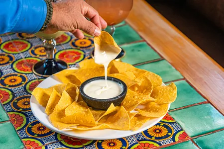

Home
Queso Fundido

Description
Queso Fundido is a warm, gooey cheese dip with a bit of spice, often
served as a starter or appetizer. It's perfect with tortilla chips or warm
tortillas!
Ingredients
- 2 tablespoons olive oil
- 1 small onion, finely chopped
- 2 cloves garlic, minced
- 1/2 pound chorizo, casing removed and crumbled
- 1 1/2 cups shredded Monterey Jack cheese
- 1 cup shredded Chihuahua or Oaxaca cheese (or other melty cheese)
- 1/2 cup milk or cream
- Fresh cilantro for garnish
- 1/4 teaspoon crushed red pepper flakes (optional)
Steps
- Prepare the chorizo:
- In a medium skillet over medium heat, heat the olive oil.
- Add the chopped onion and garlic and sauté for about 2-3 minutes
until softened.
- Add the crumbled chorizo and cook until browned, about 5-7
minutes.
- Prepare the cheese:
- Reduce the heat to low.
- Add the shredded cheeses to the skillet along with the milk (or
cream).
- Stir constantly until the cheese has melted into a smooth, creamy
dip.
- Final touches:
- Add the crushed red pepper flakes for a little heat
(optional).
- Taste and adjust the seasoning if needed.
- Transfer to a serving dish and garnish with fresh cilantro.
- Serve with tortilla chips, warm tortillas, or vegetables for
dipping!